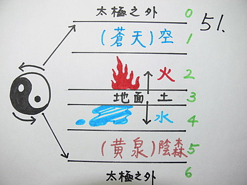
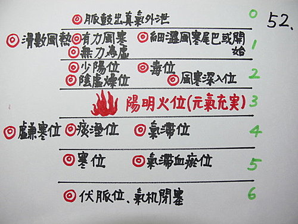
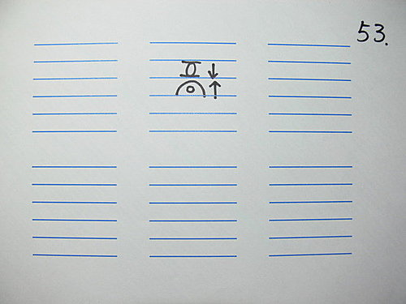
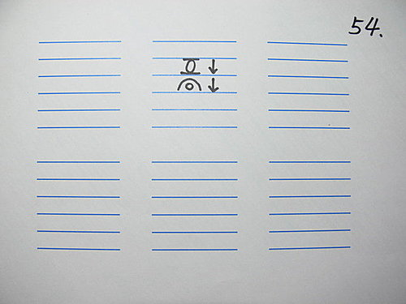
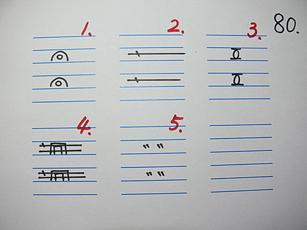

脈理醫理學 36.2：五層脈病機和用法（二）‥‥‥28脈是經，5層脈病機是緯，經緯交織，則脈象上的病機，就能被分析得很清楚
作者：陳建元
5層脈病機如何搭配28脈來使用呢？其實28脈就是「病機」，5層脈病機就是「隱藏的病機」。
使用的方法是先用28脈的病機做判斷，但當用判斷有疑難點時，則佐以5層脈的「隱藏的病機」來看，那麼脈象的本質就會被分析得很透徹而不會產生迷惑。
28脈的「病機」是指每個脈有自己所主的特定項目，譬如滑脈主痰、洪脈主熱主陰虛、濡脈主濕主虛、弦脈主氣滯。5層脈病機則是「隱藏式的病機」，它的功用是能更進一步把28脈在脈譜上落點，做更清楚的闡釋。
28脈是個性、是直看、是直向的串連；5層脈病機是加權、是共性、是橫看、是橫向的串連。28脈是經，5層脈病機是緯，經緯交織，則脈象上的病機，就能被分析得很清楚而能指導用藥。
〈圖51〉〈圖52〉→→5層脈病機


現用一些例子來說明用法（這些例子不是特例，而是臨床天天可見，很常見的例子）：
上頁的〈圖53〉

一個虛脈之下又疊一個滑洪實脈→→這是什麼→→脈法中沒說過這種形狀→→參照5層脈病機→→第3層陽明火位是滑洪實脈→→所以這是實火→→故第2層的虛脈只是第3層的脈焰（鼓動的餘波）而已，因而不予考慮→→總結→→這部脈的病機只是痰濁壅盛。
上頁的〈圖54〉

一個虛脈之下也是疊一個滑洪實脈，但這個滑洪實脈是鼓動無力的→→這是什麼→→脈法中沒說過這種形狀→→參照5層脈病機→→第3層陽明火位無力是虛滑脈→→第2層也是虛脈→→2、3層都無力→→可知虛是本，第3層的滑無力脈也指是虛火虛痰罷了！→→總結→→這部脈的病機是虛為本（偏血虛），兼夾些虛火虛痰。

〈圖80〉中的1→→臨症中滑脈可能出現在第2層，但也可能出現在第4層→→這兩種滑脈的病機有一樣嗎？→→慘了，28脈中沒說過這兩者的區別→→橫看對照5層脈病機→→查知第2層常見主燥，第4層常見主濕痰→→所以雖然都是滑（痰）脈→→但病機偏重必有所不同→→第2層的滑脈應該是由火旺爍液而來，第4層的滑脈應該是由濕醞結聚而來→→總結→→第2層的滑脈治以化痰滋陰，第4層的滑脈治以化痰去濕。
〈圖80〉中的2→→臨症中細弦脈可能出現在第2層，但也可能出現在第4層→→這兩種細弦脈很容易混淆，因為陰虛的細數脈和氣滯的細弦脈，幾乎是會混淆在一起的→→橫看對照5層脈病機→→查知第2層主陰虛，第4層主氣滯→→所以雖然都是細弦脈→→但病機偏重必有所不同→→第2層的細弦脈主要是陰虛，第4層的細弦脈主要是氣滯→→總結→→第2層的細弦脈治以滋陰，第4層的細弦脈治以理氣。
〈圖80〉中的3→→臨症中虛脈可能出現在第2層，但也可能出現在第4層→→橫看對照5層脈病機→→查知第2層常見主陰虛，第4層常見主氣虛→→病機偏重不同→→總結→→第2層的虛脈主要治以養血，第4層的虛脈主要治以補氣。
〈圖80〉中的4→→臨症中弦洪脈可能出現在第2層，但也可能出現在第4層→→橫看對照5層脈病機→→查知第2層主陰血虛，第4層主氣滯→→病機偏重不同→→總結→→第2層治以清熱滋陰為主，理氣為輔；第4層治以理氣為主，清熱滋陰為輔。
〈圖80〉中的5→→臨症中澀脈可能出現在第2層，但也可能出現在第4層→→橫看對照5層脈病機→→查知第2層主陰血虛，第4層主氣滯血瘀→→病機偏重不同→→總結→→第2層治以滋陰為主，活血為輔；第4層治以活血為主。
歷代以來脈學的研究就是一直停滯在28脈的研究，這是因為後面就沒有醫家再陸續提出一些較完整而且有實用性的配套操作系統了。後人縱然稍有研究，也只是取28脈中的幾個脈象加以組合，最多也只是在直向的串連方面做文章，橫向的並連則從未見過，導致28脈的發展中，清楚的地方歸清楚，模糊的地方仍然是模糊不解（上面舉例的例子都是模糊地帶（但臨床到處可見）。只知道有28脈，脈診在使用上仍會隱晦不顯，得5層脈病機訣竅後，脈法乃可昌明，幸勿輕忽。
【引用請先來信告知徵求同意，若有涉及販售營利等商業行為，版權所有拷貝盜用必究。】
【藥王脈學講壇】http://blog.xuite.net/drjychen/twblog